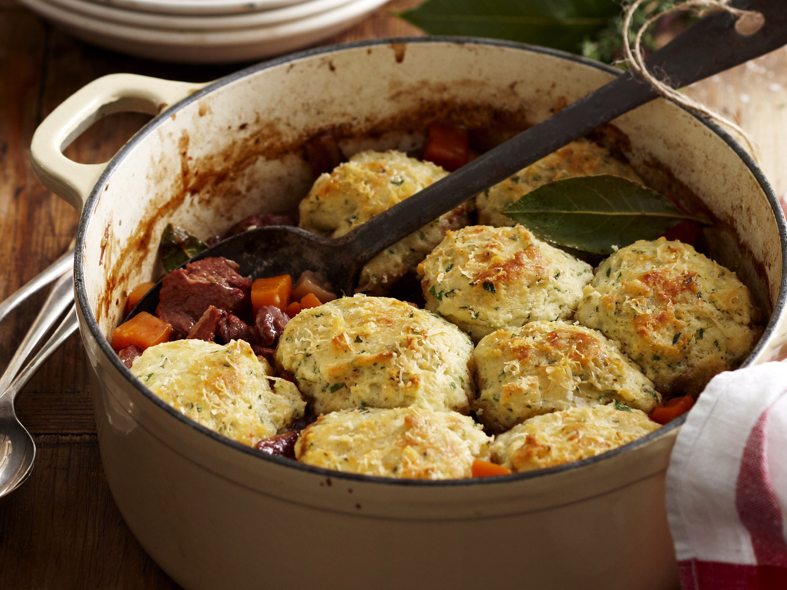

This is a quick, easy recipe which can be easily adapted for those with
dietary requirements. E.g. It is easily vegan but not adding meat, or gluten-
free by leaving out the dumplings. By prepping the majority beforehand,
this is an easy recipe with very little technical skill needed.

Serves 4
Level Easy
Cooking time 3 hours
Ingredients
For the Stew
4 large carrots, peeled and roughly chopped
3 large potatoes, peeled and cut into medium chunks
2 leeks, roughly sliced
900g stewing beef, cut into large chunks (leave out if vegetarian/vegan)
1 large onion, roughly chopped
2 garlic cloves, minced
3 tbsp Vegetable oil
3 tsps Dried mixed herbs
4 stock cubes, dissolved in 1 litre of water (use 1.5 litre if adding dumplings)
Pinch of salt
2 Bay leaves
For the Dumplings
100g Self-raising flour
50g Suet (beef or vegetable)
Pinch of salt
5 tbsp COLD water, or enough to make a firm dough
Instructions
The Stew
Fry the onion in the vegetable until transluscent
Add the minced garlic
When both cooked, brown the beef chunks
Add the leeks and mix until soft
Add the potatoes and carrots and immediately add the water
Leave to cook on a low heat for 2 hours
In the meantime, make the dumplings
When all is completely cooked, place the dumplings on top, covering as much
of the vegetables as possible, and bake for a further 30 minutes
The Dumplings
Mix all the dry ingredients together and add the water, bit by bit
until dough is pliable, then divide into 8 equal sized balls